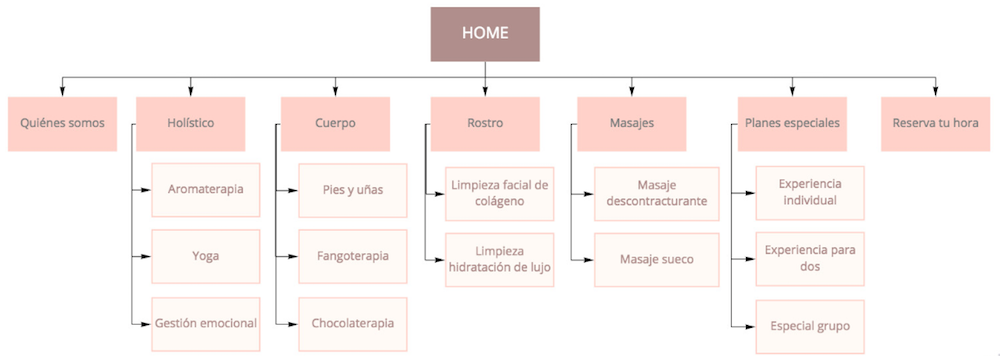
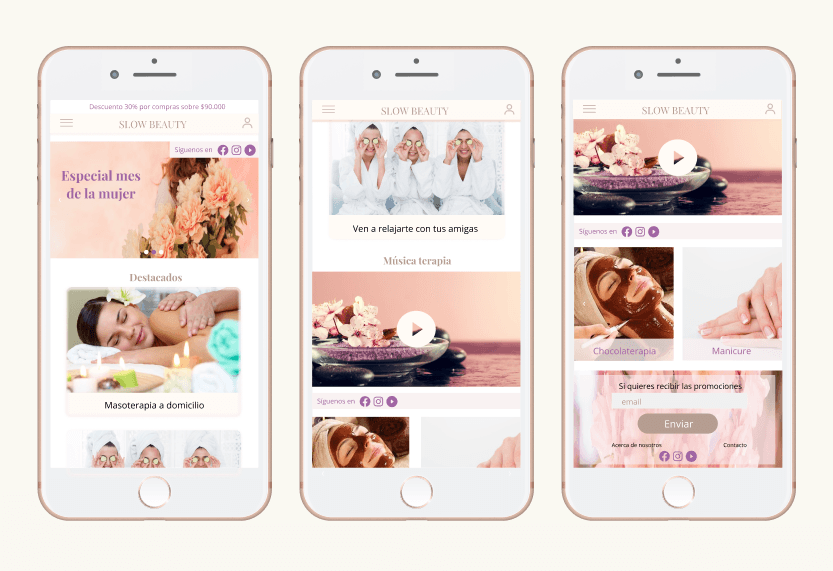
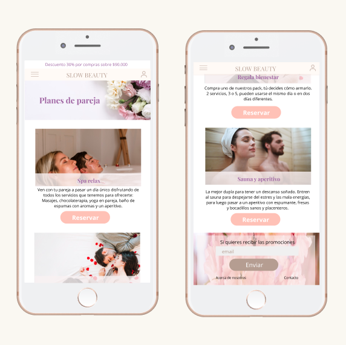
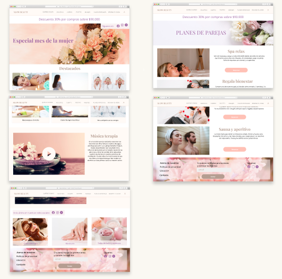

Ver más proyectos
Servicios de belleza
Slow beauty nace como una ‘contratendencia’ para devolver las pausas a la rutina, poniendo el foco en tratamientos integrales. Ofrecen servicios tanto en la sucursal como a domicilio a mujeres de un status social alto entre 25 y 50 años. Conviene señalar que aunque la clientela del sector es mayoritariamente femenina, se aprecia cada vez más una tendencia en los varones por dar importancia a su aspecto físico y a su bienestar personal.
1- Los clientes sólo llegan por recomendación de otra persona.
2- Necesitan mostrar de manera digital, los planes con los que cuentan.
3- Falta de información disponible sobre sus servicios.
4- No existe conexión entre el sitio web y las redes sociales.
1- Dar a conocer la marca y sus planes de servicios entre el público objetivo.
2- Captar a nuevos clientes potenciales.
3- Incrementar el número de personas alcanzadas en redes sociales.
4- Aumentar las ventas de los servicios.
5- Generar fidelización de los clientes antiguos.
6- Posicionarse en el mercado como un servicio premium y especializado en el uso de innovadores productos naturales brindados por personal altamente calificado.
| # | Objetivos | Puntos de contacto | KPI |
|---|---|---|---|
| 1 | Aumentar un 50% la cantidad de visitas al sitio web durante el primer trimestre | -Home del sitio -Google ads |
-Número de visitantes recurrentes/Número de visitantes únicos -Número de visitas/Número de páginas vistas -Estadística SEO/SEM |
| 2 | Aumentar un 30% la cantidad de reservas de servicios durante el primer trimestre | -Botón de reserva (call to action) -Formulario de reserva -Término de proceso de reserva |
La tasa de conversión: número de reservas de planes vía web |
| 3 | Aumentar en un 40% la cantidad de seguidores en Instagram y facebook durante el primer trimestre | Botón de suscripción/seguir (call to action) | La tasa de conversión: número de seguidores obtenidos desde el call to action |
| 4 | Informar sobre los servicios ofrecidos | -Home del sitio -Páginas internas |
-Cantidad de tiempo por contenido -Número de visitas/número de páginas vistas -Número de usuarios rebotados/número de usuarios totales |
Se realiza un muro de inspiración tomando los conceptos que la marca quiere transmitir, buscando colores, texturas e imágenes que logren plasmarlos. Se eligen tonos pasteles, imágenes sútiles que expresen la elegancia de las clientes, la sensación de bienestar que ellas buscan dentro de un ambiente íntimo y con servicios de lujo.
En un navbar superior estarán dispuestos los distintos servicios que ofrece Slow Beauty, separados por categorías y dentro de éstas los planes y opciones a las que pueden acceder, esto para ofrecer una navegación más sencilla e intuitiva.
Es un sitio web responsive, el cual destaca en su estructura las imágenes por sobre el texto, mantiene en cada página un hero-section con imagen y título, en el home continua una sección de servicios destacados siguiendo por las noticias y promociones más recientes. Al interior de las categorías se presentan los distintos planes y servicios disponibles.
Versión mobile
Página interior
Versión desktop
Ver más proyectos